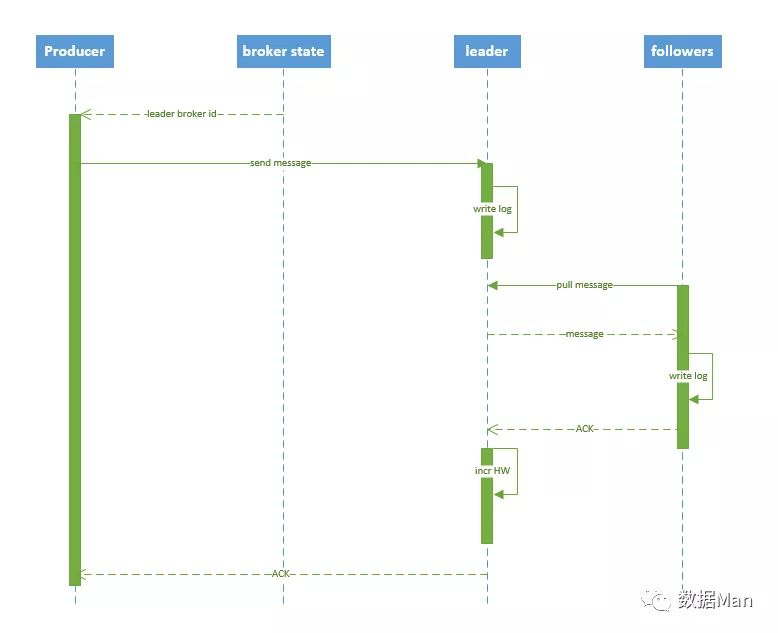

Kafka 常见问题
1. Kafka 如何做到高吞吐、低延迟的呢？
这里提下 Kafka 写数据的大致方式：先写操作系统的页缓存（Page Cache）,然后由操作系统自行决定何时刷到磁盘。
因此 Kafka 达到高吞吐、低延迟的原因主要有以下 4 点：
- 页缓存是在内存中分配的，所以消息写入的速度很快。
- Kafka 不必和底层的文件系统进行交互，所有繁琐的 I/O 操作都由操作系统来处理。
- Kafka 采用追加写的方式，避免了磁盘随机写操作。
- 使用以 sendfile 为代表的零拷贝技术提高了读取数据的效率。
PS: 使用页缓存而非堆内存还有一个好处，就是当 Kafka broker 的进程崩溃时，堆内存的数据会丢失，但是页缓存的数据依然存在，重启 Kafka broker 后可以继续提供服务。
2. Kafka 的 producer 工作流程？

- ① 封装为 ProducerRecord 实例
- ② 序列化
- ③ 由 partitioner 确定具体分区
- ④ 发送到内存缓冲区
- ⑤ 由 producer 的一个专属 I/O 线程去取消息，并将其封装到一个批次 ，发送给对应分区的 kafka broker
- ⑥ leader 将消息写入本地 log
- ⑦ followers 从 leader pull 消息，写入本地 log 后 leader 发送 ACK
- ⑧ leader 收到所有 ISR 中的 replica 的 ACK 后，增加 HW（high watermark，最后 commit 的 offset） 并向 producer 发送 ACK
3. Kafka 的 consumer 工作流程？
- ① 连接 ZK 集群，拿到对应 topic 的 partition 信息和 partition 的 leader 的相关信息
- ② 连接到对应 leader 对应的 broker
- ③ consumer 将自己保存的 offset 发送给 leader
- ④ leader 根据 offset 等信息定位到 segment（索引文件和日志文件）
- ⑤ 根据索引文件中的内容，定位到日志文件中该偏移量对应的开始位置读取相应长度的数据并返回给 consumer
4. 重要参数有哪些？
acks
- acks = 0 : 不接收发送结果
- acks = all 或者 -1: 表示发送消息时，不仅要写入本地日志，还要等待所有副本写入成功。
- acks = 1: 写入本地日志即可，是上述二者的折衷方案，也是默认值。
retries
- 默认为 0，即不重试，立即失败。
- 一个大于 0 的值，表示重试次数。
buffer.memory
- 指定 producer 端用于缓存消息的缓冲区的大小，默认 32M；
- 适当提升该参数值，可以增加一定的吞吐量。
batch.size
- producer 会将发送分区的多条数据封装在一个 batch 中进行发送，这里的参数指的就是 batch 的大小。
- 该参数值过小的话，会降低吞吐量，过大的话，会带来较大的内存压力。
- 默认为 16K，建议合理增加该值。
5. 丢失数据的场景？
- consumer 端：不是严格意义的丢失，其实只是漏消费了。 设置了 auto.commit.enable=true ，当 consumer fetch 了一些数据但还没有完全处理掉的时候，刚好到 commit interval 触发了提交 offset 操作，接着 consumer 挂掉。这时已经fetch的数据还没有处理完成但已经被commit掉，因此没有机会再次被处理，数据丢失。
- producer 端： I/O 线程发送消息之前，producer 崩溃， 则 producer 的内存缓冲区的数据将丢失。
6. producer 端丢失数据如何解决？
- 同步发送，性能差，不推荐。
- 仍然异步发送，通过“无消息丢失配置”（来自胡夕的《Apache Kafka 实战》）极大降低丢失的可能性：
- block.on.buffer.full = true 尽管该参数在0.9.0.0已经被标记为“deprecated”，但鉴于它的含义非常直观，所以这里还是显式设置它为true，使得producer将一直等待缓冲区直至其变为可用。否则如果producer生产速度过快耗尽了缓冲区，producer将抛出异常
- acks=all 很好理解，所有follower都响应了才认为消息提交成功，即"committed"
- retries = MAX 无限重试，直到你意识到出现了问题:)
- max.in.flight.requests.per.connection = 1 限制客户端在单个连接上能够发送的未响应请求的个数。设置此值是1表示kafka broker在响应请求之前client不能再向同一个broker发送请求。注意：设置此参数是为了避免消息乱序
- 使用KafkaProducer.send(record, callback)而不是send(record)方法 自定义回调逻辑处理消息发送失败
- callback逻辑中最好显式关闭producer：close(0) 注意：设置此参数是为了避免消息乱序
- unclean.leader.election.enable=false 关闭unclean leader选举，即不允许非ISR中的副本被选举为leader，以避免数据丢失
- replication.factor >= 3 这个完全是个人建议了，参考了Hadoop及业界通用的三备份原则
- min.insync.replicas > 1 消息至少要被写入到这么多副本才算成功，也是提升数据持久性的一个参数。与acks配合使用
- 保证replication.factor > min.insync.replicas 如果两者相等，当一个副本挂掉了分区也就没法正常工作了。通常设置replication.factor = min.insync.replicas + 1即可
7. consumer 端丢失数据如何解决？
enable.auto.commit=false 关闭自动提交位移，在消息被完整处理之后再手动提交位移
8. 重复数据的场景？
网络抖动导致 producer 误以为发送错误，导致重试，从而产生重复数据，可以通过幂等性配置避免。
9. 分区策略（即生产消息时如何选择哪个具体的分区）？
- 指定了 key ，相同的 key 会被发送到相同的分区；
- 没有指定 key，通过轮询保证各个分区上的均匀分配。
10. 乱序的场景？
消息的重试发送。
11. 乱序如何解决？
参数配置 max.in.flight.requests.per.connection = 1 ，但同时会限制 producer 未响应请求的数量，即造成在 broker 响应之前，producer 无法再向该 broker 发送数据。
12. 如何选择 Partition 的数量？
- 在创建 Topic 的时候可以指定 Partiton 数量，也可以在创建完后手动修改。但 Partiton 数量只能增加不能减少。中途增加 Partiton 会导致各个 Partiton 之间数据量的不平等。
- Partition 的数量直接决定了该 Topic 的并发处理能力。但也并不是越多越好。Partition 的数量对消息延迟性会产生影响。
- 一般建议选择 Broker Num * Consumer Num ，这样平均每个 Consumer 会同时读取 Broker 数目个 Partition ， 这些 Partition 压力可以平摊到每台 Broker 上。
13. 可重试的异常情况有哪些？
- 分区的 leader 副本不可用，一般发生再 leader 换届选举时。
- controller 当前不可用，一般是 controller 在经历新一轮的选举。
- 网络瞬时故障。
14. controller 的职责有哪些？
在 kafka 集群中，某个 broker 会被选举承担特殊的角色，即控制器（controller），用于管理和协调 kafka 集群，具体职责如下：
- 管理副本和分区的状态
- 更新集群元数据信息
- 创建、删除 topic
- 分区重分配
- leader 副本选举
- topic 分区扩展
- broker 加入、退出集群
- 受控关闭
- controller leader 选举
15. leader 挂了会怎样？（leader failover）
当 leader 挂了之后，controller 默认会从 ISR 中选择一个 replica 作为 leader 继续工作，条件是新 leader 必须有挂掉 leader 的所有数据。
如果为了系统的可用性，而容忍降低数据的一致性的话，可以将 unclean.leader.election.enable = true ，开启 kafka 的"脏 leader 选举"。当 ISR 中没有 replica，则会从 OSR 中选择一个 replica 作为 leader 继续响应请求，如此操作提高了 Kafka 的分区容忍度，但是数据一致性降低了。
16. broker 挂了会怎样？（broker failover）
broker上面有很多 partition 和多个 leader 。因此至少需要处理如下内容：
- 更新该 broker 上所有 follower 的状态
- 从新给 leader 在该 broker 上的 partition 选举 leader
- 选举完成后，要更新 partition 的状态，比如谁是 leader 等
kafka 集群启动后，所有的 broker 都会被 controller 监控，一旦有 broker 宕机，ZK 的监听机制会通知到 controller， controller 拿到挂掉 broker 中所有的 partition，以及它上面的存在的 leader，然后从 partition的 ISR 中选择一个 follower 作为 leader，更改 partition 的 follower 和 leader 状态。
17. controller 挂了会怎样？（controller failover）
- 由于每个 broker 都会在 zookeeper 的 "/controller" 节点注册 watcher，当 controller 宕机时 zookeeper 中的临时节点消失
- 所有存活的 broker 收到 fire 的通知，每个 broker 都尝试创建新的 controller path，只有一个竞选成功并当选为 controller。
18. Zookeeper 为 Kafka 做了什么？
- 管理 broker 与 consumer 的动态加入与离开。（Producer 不需要管理，随便一台计算机都可以作为Producer 向 Kakfa Broker 发消息）
- 触发负载均衡，当 broker 或 consumer 加入或离开时会触发负载均衡算法，使得一个 consumer group 内的多个 consumer 的消费负载平衡。（因为一个 comsumer 消费一个或多个partition，一个 partition 只能被一个 consumer 消费）
- 维护消费关系及每个 partition 的消费信息。
19. Page Cache 带来的好处。
Linux 总会把系统中还没被应用使用的内存挪来给 Page Cache，在命令行输入free，或者 cat /proc/meminfo ，“Cached”的部分就是 Page Cache。
Page Cache 中每个文件是一棵 Radix 树（又称 PAT 位树, 一种多叉搜索树），节点由 4k 大小的 Page 组成，可以通过文件的偏移量（如 0x1110001）快速定位到某个Page。
当写操作发生时，它只是将数据写入 Page Cache 中，并将该页置上 dirty 标志。
当读操作发生时，它会首先在 Page Cache 中查找，如果有就直接返回，没有的话就会从磁盘读取文件写入 Page Cache 再读取。
可见，只要生产者与消费者的速度相差不大，消费者会直接读取之前生产者写入Page Cache的数据，大家在内存里完成接力，根本没有磁盘访问。
而比起在内存中维护一份消息数据的传统做法，这既不会重复浪费一倍的内存，Page Cache 又不需要 GC （可以放心使用60G内存了），而且即使 Kafka 重启了，Page Cache 还依然在。